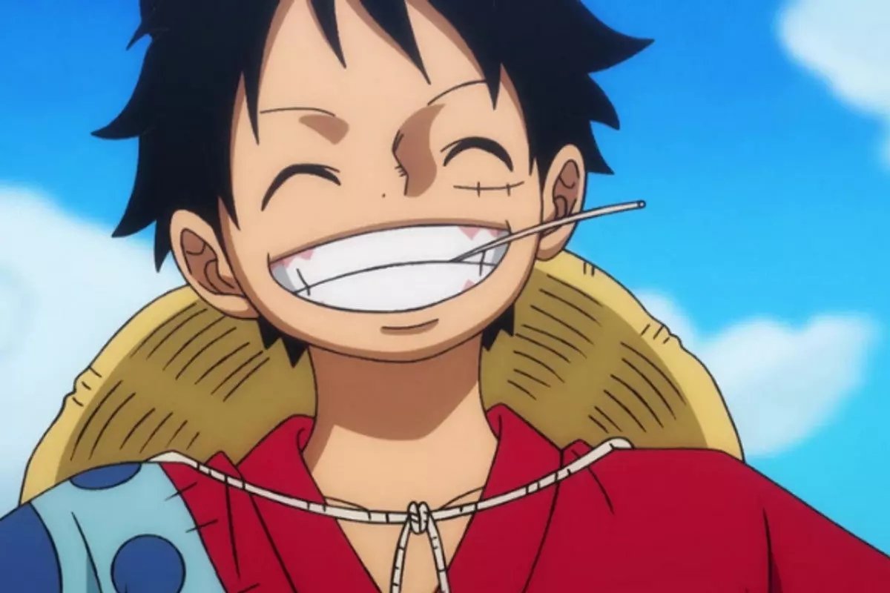

ONE PIECE
Personagens do bando do Chapéu de Palha:
-

Monkey D. Luffy- Capitão da tripulação, possui uma habilidade da Fruta do Diabo Gomu Gomu. Luffy é o primeiro membro e fundador da tripulação, e entrou para ela no Arco Romance Dawn , o primeiro arco da série.

Zoro -O espadachim da tripulação que sonha em se tornar o melhor espadachim do mundo. Zoro entrou para a tripulação no Arco Romance Dawn.
Sanji - O cozinheiro da tripulação que sonha em encontrar o lendário All Blue, onde todos os ingredientes do mundo se encontram. Sanji se uniu à tripulação no Arco Baratie.
Nami - Uma navegadora habilidosa que sonha em mapear todo o mundo. Nami se juntou à tripulação no Arco Orange Town.
Usopp - O mentiroso e habilidoso em criar histórias. Usopp entrou para a tripulação no Arco Syrup Village.
Tony Tony Chopper - O médico da tripulação e uma arena que vem uma Fruta do Diabo, permitindo-lhe se transformar em diferentes formas. Chopper entrou para a tripulação no Arco Drum Island.

Nico Robin - Uma arqueóloga que possui informações cruciais sobre a História Antiga. Robin se juntou à tripulação no Arco Alabasta.
Franky- O construtor de navios e mecânico da tripulação que também tem um passado ligado aos planos de Robin. Franky entrou para a tripulação no Arco Water 7/Enies Lobby.
Brook- O músico esqueleto que comeu uma Fruta do Diabo e voltou à vida. Brook se uniu à tripulação no Arco Thriller Bark.

Jinbe- O ex-capitão dos Piratas do Sol e mestre do estilo de luta de Karatê Peixe. Jinbe se tornou membro oficial da tripulação no Arco Whole Cake Island.